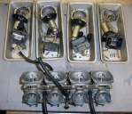
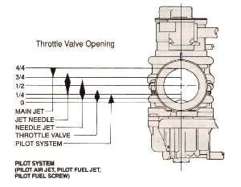
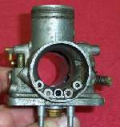
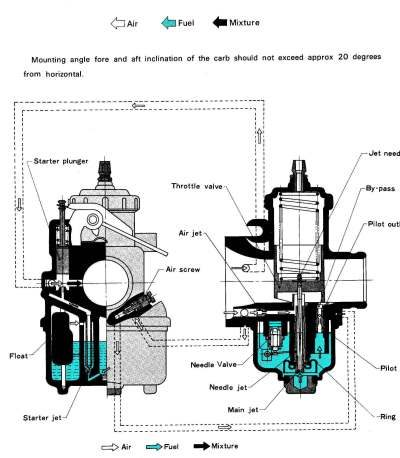
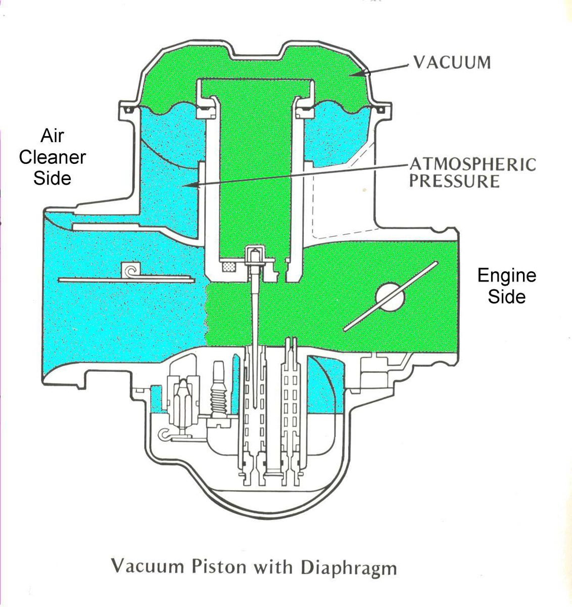

The carburettor sits between the air filter and the engine on bikes without fuel injection. Most commuters use a slide carburettor with a float bowl underneath. The K-Light 125 is fuel-injected and has no carburettor; it uses a throttle body.
What it does
Air rushing through a narrow throat (the venturi) lowers the pressure there, and fuel is pushed up from the float bowl through calibrated holes called jets. The float and needle valve keep the fuel in the bowl at a fixed level. The pilot jet feeds idle, the needle and needle jet feed mid throttle, and the main jet feeds full throttle. A choke or starter circuit adds extra fuel for cold starts. Old fuel leaves varnish that blocks the tiny jets, and the float needle wears and leaks.
Signs it is worn or failing
- Fuel pours out of the overflow: float or needle valve.
- Stalls at idle, starts only with the choke on: blocked pilot jet.
- Bogs at full throttle, hesitation, flat spot.
- Black smoke or runs lean.
When to replace it
When the body is cracked, the slide or bore is badly worn, or a stripped thread cannot be repaired. Most faults are fixed by cleaning and new seals. Repair kits contain jets, needle valve and gaskets.
What to match when buying
- Match the make and code stamped on the body (for example a Keihin or Mikuni number) and the bore size in mm.
- Check inlet and outlet sizes, choke type (lever, cable or automatic), and the throttle cable fitting.
- Copy carburettors are common and cheap, but jets and float height often differ from the original. Compare jet numbers with your old one.
Fitting notes
- Home job: Clean the carburettor, Check the float and needle valve, Adjust idle speed and mixture.
- Never put rubber parts in carb cleaner. Clear jets with air or solvent, never with wire.
- Use the float height and screw settings for your carburettor from your bike's manual; there is no universal value. Check for intake leaks after fitting: Find an intake air leak.
- Use the carburettor maker's own jets and parts. The maker's mark is stamped on genuine jets. Copy kits often fit badly or have wrong hole sizes.
- Do not strip every part. Take it apart only as far as the cleaning needs. Multiple carburettors are joined as an assembly and the linkage settings are kept if it is left whole. See Remove and refit a carburettor with stiff rubber boots.
- The slide has a cut-out and a needle that change the mixture. See Carburettor jets and Jet needle and clip.